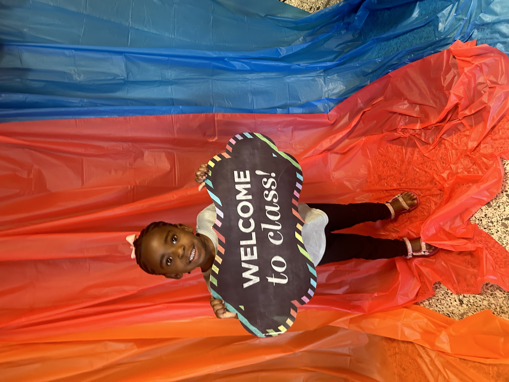

Her name is Trust, and she definitely doesn’t play any games. She’s 5 years old but has the personality of a 30-year-old. She’s bold, loud, and, trust me, I’m very proud of her.
Her favorite colors are purple and pink. When asked what she wants to be when she grows up, she says she doesn’t know—so stay tuned!
